文字
背景
行間


2019年4月の記事一覧
新緑とツツジが美しい記念館周辺
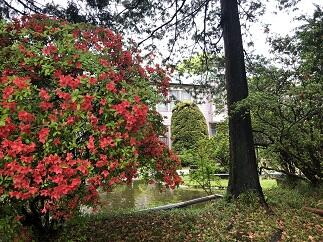 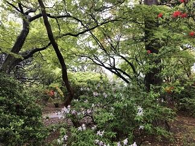
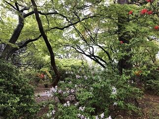
 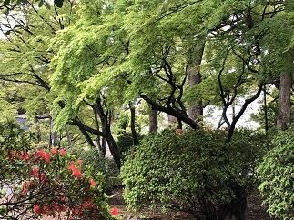今週に入って、天候が不安定な日が続いています。今日も朝は雨模様ですが、記念館周辺を歩いていると新緑のなんとも言えない淡くまぶしい緑とこれからだんだんと見ごろを迎え少しづつ咲き始めたツツジの燃えるような真っ赤な花の美しさに目が奪われます。もしかしたら新緑が最も美しく見える時期なのではないかと思います。今日は、そんな記念館周辺の風景をお届けします。
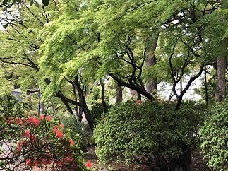今週に入って、天候が不安定な日が続いています。今日も朝は雨模様ですが、記念館周辺を歩いていると新緑のなんとも言えない淡くまぶしい緑とこれからだんだんと見ごろを迎え少しづつ咲き始めたツツジの燃えるような真っ赤な花の美しさに目が奪われます。もしかしたら新緑が最も美しく見える時期なのではないかと思います。今日は、そんな記念館周辺の風景をお届けします。
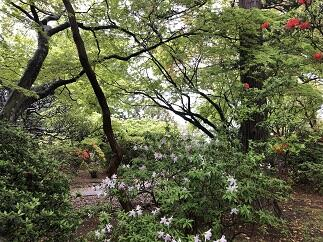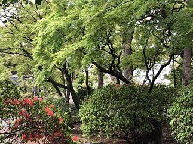今週に入って、天候が不安定な日が続いています。今日も朝は雨模様ですが、記念館周辺を歩いていると新緑のなんとも言えない淡くまぶしい緑とこれからだんだんと見ごろを迎え少しづつ咲き始めたツツジの燃えるような真っ赤な花の美しさに目が奪われます。もしかしたら新緑が最も美しく見える時期なのではないかと思います。今日は、そんな記念館周辺の風景をお届けします。 ダンス同好会パフォーマンス
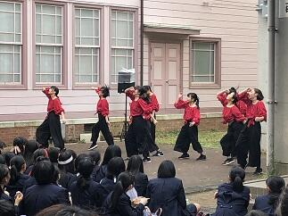


 本日（4月24日）のお昼休みを利用して、本校ダンス同好会の3年生の引退記念パフォーマンスが行われました。多くの先生・生徒・保護者の方々の声援のなか、不断の努力による練習の成果が発揮されたパフォーマンスは、一段と冴えわたり多くの人の心に感動を与えてくれました。ダンサーとオーディエンスとの一体感が感じられるとても素晴らしいステージだったと思います。3年生のダンス同好会の皆さんお疲れさまでした。そして、いつも感動をありがとうございました。
本日（4月24日）のお昼休みを利用して、本校ダンス同好会の3年生の引退記念パフォーマンスが行われました。多くの先生・生徒・保護者の方々の声援のなか、不断の努力による練習の成果が発揮されたパフォーマンスは、一段と冴えわたり多くの人の心に感動を与えてくれました。ダンサーとオーディエンスとの一体感が感じられるとても素晴らしいステージだったと思います。3年生のダンス同好会の皆さんお疲れさまでした。そして、いつも感動をありがとうございました。
本日（4月24日）のお昼休みを利用して、本校ダンス同好会の3年生の引退記念パフォーマンスが行われました。多くの先生・生徒・保護者の方々の声援のなか、不断の努力による練習の成果が発揮されたパフォーマンスは、一段と冴えわたり多くの人の心に感動を与えてくれました。ダンサーとオーディエンスとの一体感が感じられるとても素晴らしいステージだったと思います。3年生のダンス同好会の皆さんお疲れさまでした。そして、いつも感動をありがとうございました。 記念館登録有形文化財の登録プレートの支持台が新しくなりました
本日、記念館が登録有形文化財として登録されていることを示す文化庁からいただいた登録プレートを設置する屋根つきの支持台が完成しました。今まで支持台になっていた木材の劣化に伴い、この度、新たな支持台を技能員の古川さんと工芸の轡先生のお二人に新たなデザインで制作していただきました。本当にお二人には心より感謝いたします。制作は支柱を立てて、屋根を作り、その屋根の木材部分やプレートを設置する木材への漆ラッカーによる塗装を施し、屋根にはかつて記念館の屋根で使われていたスレートを使い、巴瓦とみね瓦は轡先生が焼き物で制作してくださいました。着手から約４か月に及ぶ期間を経てここに皆さんへこの素晴らしい作品をご紹介できることをうれしく思います。記念館にお越しの際は是非ご自分の目で確かめくださると幸いです。完成までの工程を写真でご紹介したいと思います。
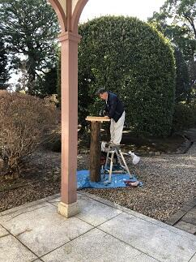 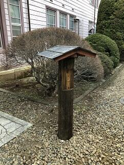
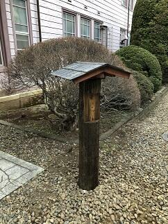


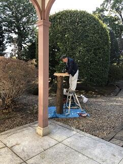
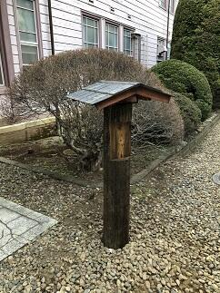 EHT、VLBI,ブラックホールシャドウ
昨夜の報道によると、国立天文台など世界の約80の研究機関による国際チームが、ブラックホールの撮影に初めて成功したと発表しました。あわせて、イベント・ホライズン・テレスコープ（EHT）によって撮影された超大質量ブラックホールが公開されました。EHTは、超長基線電波干渉計（Very Long Baseline Interferometry: VLBI）という仕組みを用いています。VLBIは世界中に散らばる望遠鏡を同期させ、地球の自転を利用することで、地球サイズの望遠鏡を構成する仕組みです。今回VLBIにより、EHTは例えるなら、月面に置いたゴルフボールが見えるほどの極めて高い解像度を実現できたそうです。ブラックホールの重力によって光が曲げられたり捕まえられたりすることで、ブラックホールシャドウが生まれます。ブラックホールの質量が大きいほど、シャドウも大きくなります。巨大ブラックホールは、名に反して非常にコンパクトな天体です。そのため、これまで直接観測することは不可能だったそうです。今回撮影されたブラックホールシャドウは、地球から約5500万光年先にある「おとめ座銀河団」の「M87」の中心に位置しているブラックホールが作り出したものです。「M87」は直径約12万光年の中に、数兆個の星と約13000個もの球状星団を含む巨大な楕円銀河です。なお今年は、一般相対性理論が歴史的な実験によって初めて実証されてから100年の節目の年に当たり、3年前に重力波が観測されて以来アインシュタインの一般相対性理論を裏付ける結果となったことはすばらいことだと思います。さらに宇宙研究が進むことが期待されます。
平成最後の入学式
本日平成31年4月9日（火）は平成最後の入学式でした。前日とは打って変わって穏やかな春の日となり、桜もその花で入学を祝ってくれているようでした。おかげ様で、入学式として最高の日になりました。入学式では、内山賢一PTA会長、本校同窓会である鹿山会の粟生雄四郎会長をはじめとするご来賓の方々や多くの保護者が見守るなか普通科280名、理数科40名の合計320名の入学を許可し、無事に新入生として迎えることができました。この場を借りて新入生の母校の中学校の先生方をはじめ多くの関係者の皆様へご報告するとともに感謝申し上げます。引き続き佐倉高校でしっかりと新入生の夢を育みその実現に向けて支援してまいりますので、皆様におかれましても今後ともご支援ご協力をお願い申し上げます。
 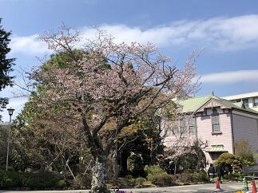
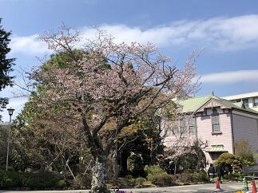 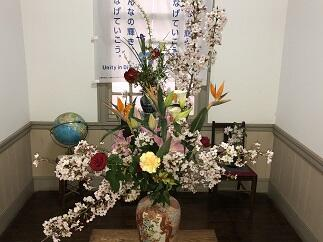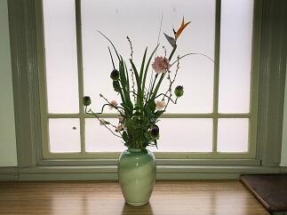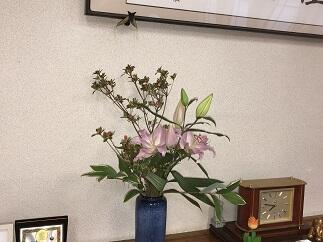本校では、式典に際しても多くの生徒さんの協力で運営がされています。新入生の入退場に際しては吹奏楽部が、校歌の披露を音楽部が演奏し、そして式場や校内のお花を華道部が生けてくださいました。本当にありがとうございました。（写真上段右、下段は華道部の作品）
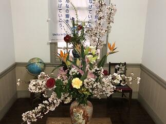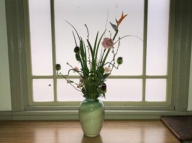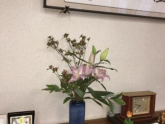本校では、式典に際しても多くの生徒さんの協力で運営がされています。新入生の入退場に際しては吹奏楽部が、校歌の披露を音楽部が演奏し、そして式場や校内のお花を華道部が生けてくださいました。本当にありがとうございました。（写真上段右、下段は華道部の作品）
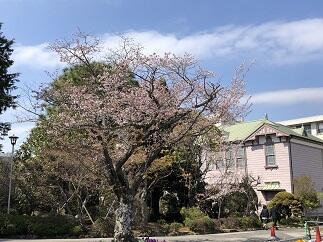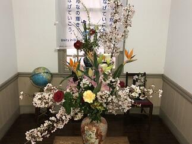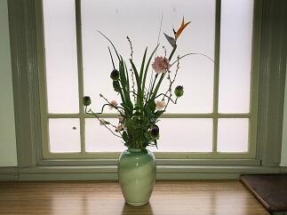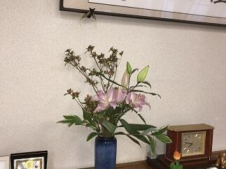本校では、式典に際しても多くの生徒さんの協力で運営がされています。新入生の入退場に際しては吹奏楽部が、校歌の披露を音楽部が演奏し、そして式場や校内のお花を華道部が生けてくださいました。本当にありがとうございました。（写真上段右、下段は華道部の作品）